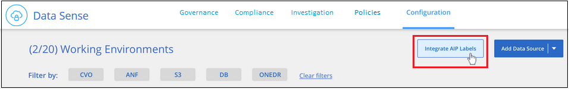
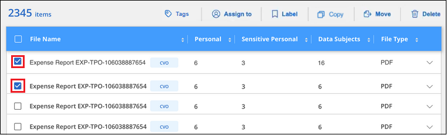
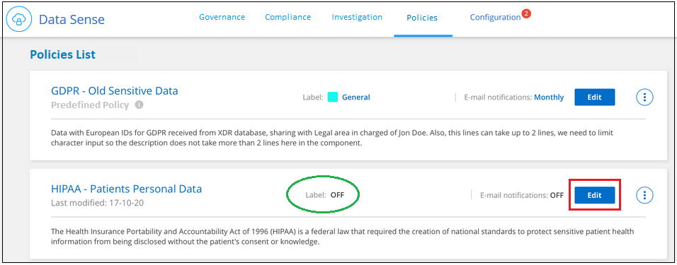
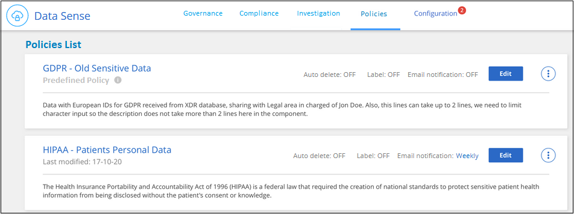
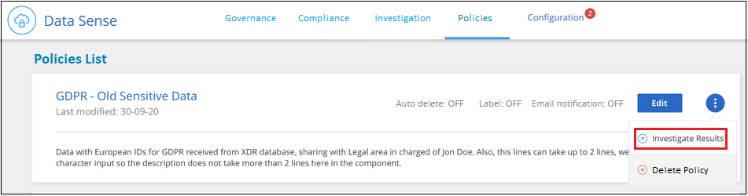
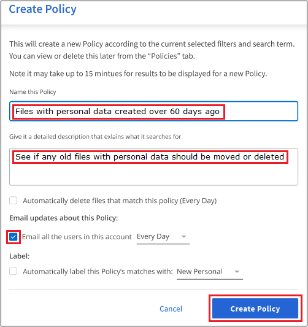
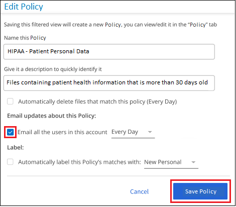
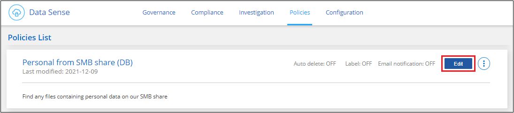
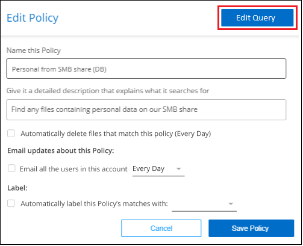
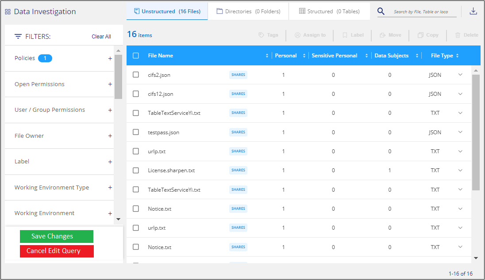

Demander de modifier un document
Demander de modifier un document Modifier sur GitHub
Modifier sur GitHub Guide des contributeurs
Guide des contributeursOrganiser vos données privées
Contributeurs
Avec Cloud Data Sense, vous pouvez gérer et organiser vos données privées de plusieurs façons. Vous pouvez ainsi consulter plus facilement les données qui vous sont les plus importantes.
-
Si vous êtes abonné à "Protection des informations Azure (AIP)" Pour classer et protéger vos fichiers, vous pouvez utiliser Cloud Data Sense pour gérer ces étiquettes AIP.
-
Vous pouvez ajouter des balises aux fichiers que vous souhaitez marquer pour une organisation ou pour un type de suivi.
-
Vous pouvez affecter un utilisateur BlueXP à un fichier spécifique ou à plusieurs fichiers, de sorte que cette personne puisse être responsable de la gestion du fichier.
-
Grâce à la fonctionnalité « Stratégie », vous pouvez créer vos propres requêtes de recherche personnalisées afin de pouvoir voir facilement les résultats en cliquant sur un bouton.
-
Vous pouvez envoyer des alertes par e-mail aux utilisateurs de BlueXP lorsque certaines stratégies critiques renvoient des résultats.

|
Les fonctionnalités décrites dans cette section ne sont disponibles que si vous avez choisi d’effectuer une analyse de classification complète sur vos sources de données. Les sources de données qui ont une analyse avec mappage uniquement n’affichent pas de détails au niveau des fichiers. |
Dois-je utiliser des étiquettes ou des étiquettes ?
Vous trouverez ci-dessous une comparaison du balisage Data Sense et de l’étiquetage Azure information protection.
| Étiquettes | Étiquettes |
|---|---|
Les balises de fichier font partie intégrante de Data Sense. |
Vous devez vous être abonné à Azure information protection (AIP). |
La balise est conservée uniquement dans la base de données de détection des données - elle n’est pas écrite dans le fichier. Il ne modifie pas le fichier, ni les heures d’accès ou de modification du fichier. |
Le libellé fait partie du fichier et, lorsque le libellé change, le fichier change. Cette modification modifie également les heures d’accès et de modification du fichier. |
Vous pouvez avoir plusieurs balises sur un seul fichier. |
Vous pouvez avoir une étiquette sur un seul fichier. |
Cette balise peut être utilisée pour une action interne de détection des données, telle que copie, déplacement, suppression, exécution d’une règle, etc |
Les autres systèmes qui peuvent lire le fichier peuvent voir l’étiquette, qui peut être utilisée pour une automatisation supplémentaire. |
Un seul appel API est utilisé pour voir si un fichier a une balise. |
Catégorisation de vos données à l’aide de libellés AIP
Vous pouvez gérer les étiquettes AIP dans les fichiers que Cloud Data SENSE analyse si vous vous êtes abonné "Protection des informations Azure (AIP)". AIP vous permet de classer et de protéger les documents et les fichiers en appliquant des étiquettes au contenu. Data Sense vous permet d’afficher les étiquettes déjà affectées aux fichiers, d’ajouter des étiquettes aux fichiers et de modifier les étiquettes lorsqu’une étiquette existe déjà.
Cloud Data SENSE prend en charge les libellés AIP dans les types de fichiers suivants : .DOC, .DOCX, .PDF, .PPTX, .XLS, XLSX.
|
|
|
Intégration des libellés AIP dans votre espace de travail
Avant de gérer les étiquettes AIP, vous devez intégrer la fonctionnalité AIP label dans Cloud Data Sense en vous connectant à votre compte Azure existant. Une fois activée, vous pouvez gérer les libellés AIP dans les fichiers pour tous "sources des données" Dans votre espace de travail BlueXP.
-
Vous devez disposer d’un compte et d’une licence Azure information protection.
-
Vous devez disposer des identifiants de connexion pour le compte Azure.
-
Si vous prévoyez de modifier les étiquettes dans les fichiers qui résident dans les compartiments Amazon S3, assurez-vous que l’autorisation est requise
s3:PutObjectEst inclus dans le rôle IAM. Voir "Configuration du rôle IAM".
-
Dans la page Configuration de la détection des données du cloud, cliquez sur intégrer des étiquettes AIP.

-
Dans la boîte de dialogue intégrer des libellés AIP, cliquez sur connexion à Azure.
-
Sur la page Microsoft qui s’affiche, sélectionnez le compte et saisissez les informations d’identification requises.
-
Revenez à l’onglet Cloud Data Sense et le message «AIP Labels a été intégré avec succès au compte <Account_name> ».
-
Cliquez sur Fermer et vous verrez le texte AIP Labels Integrated en haut de la page.

Vous pouvez afficher et affecter des libellés AIP à partir du volet des résultats de la page Investigation. Vous pouvez également attribuer des libellés AIP aux fichiers à l’aide de stratégies.
Affichage des libellés AIP dans vos fichiers
Vous pouvez afficher le libellé AIP actuel attribué à un fichier.
Dans le volet Résultats de l’enquête de données, cliquez sur  pour que le fichier développe les détails des métadonnées du fichier.
pour que le fichier développe les détails des métadonnées du fichier.

Attribution manuelle d’étiquettes AIP
Vous pouvez ajouter, modifier et supprimer des étiquettes AIP de vos fichiers à l’aide de Cloud Data Sense.
Procédez comme suit pour attribuer un libellé AIP à un seul fichier.
-
Dans le volet Résultats de l’enquête de données, cliquez sur
 pour que le fichier développe les détails des métadonnées du fichier.
pour que le fichier développe les détails des métadonnées du fichier.
-
Cliquez sur attribuer un libellé à ce fichier, puis sélectionnez le libellé.
Le libellé apparaît dans les métadonnées du fichier.
Pour attribuer un libellé AIP à plusieurs fichiers :
-
Dans le volet Résultats de l’enquête de données, sélectionnez le ou les fichiers que vous souhaitez étiqueter.

-
Pour sélectionner des fichiers individuels, cochez la case de chaque fichier (
 ).
). -
Pour sélectionner tous les fichiers de la page en cours, cochez la case dans la ligne de titre (
 ).
).
-
-
Dans la barre de boutons, cliquez sur Label et sélectionnez le libellé AIP :

L’étiquette AIP est ajoutée aux métadonnées pour tous les fichiers sélectionnés.
Attribution automatique d’étiquettes AIP à l’aide de stratégies
Vous pouvez affecter un libellé AIP à tous les fichiers qui répondent aux critères de la stratégie. Vous pouvez spécifier l’étiquette AIP lors de la création de la stratégie ou ajouter l’étiquette lors de la modification d’une stratégie.
Les étiquettes sont ajoutées ou mises à jour dans les fichiers en continu lors de l’analyse de vos fichiers par Cloud Data SENSE.
Selon qu’une étiquette est déjà appliquée à un fichier et le niveau de classification de l’étiquette, les actions suivantes sont prises lors de la modification d’une étiquette :
| Si le fichier… | Alors… |
|---|---|
N’a pas d’étiquette |
L’étiquette est ajoutée |
Possède une étiquette existante d’un niveau de classification inférieur |
L’étiquette de niveau supérieur est ajoutée |
Possède un libellé existant d’un niveau de classification supérieur |
L’étiquette de niveau supérieur est conservée |
Est affectée à une étiquette manuellement et par une police |
L’étiquette de niveau supérieur est ajoutée |
Deux étiquettes différentes sont attribuées par deux polices |
L’étiquette de niveau supérieur est ajoutée |
Procédez comme suit pour ajouter une étiquette AIP à une stratégie existante.
-
Dans la page liste des stratégies, cliquez sur Modifier pour la stratégie dans laquelle vous souhaitez ajouter (ou modifier) l’étiquette AIP.

-
Dans la page Modifier la stratégie, cochez la case pour activer les libellés automatiques des fichiers qui correspondent aux paramètres de la stratégie, puis sélectionnez l’étiquette (par exemple, général).

-
Cliquez sur Enregistrer la stratégie et le libellé apparaît dans la description de la stratégie.
|
|
Si une stratégie a été configurée avec un libellé, mais que le libellé a depuis été supprimé de l’AIP, le nom de l’étiquette est désactivé et l’étiquette n’est plus affectée. |
Suppression de l’intégration AIP
Si vous ne souhaitez plus pouvoir gérer les étiquettes AIP dans des fichiers, vous pouvez supprimer le compte AIP de l’interface Cloud Data SENSE.
Notez qu’aucune modification n’est apportée aux étiquettes que vous avez ajoutées à l’aide de Data Sense. Les étiquettes qui existent dans les fichiers resteront telles qu’elles existent actuellement.
-
Dans la page Configuration, cliquez sur libellés AIP intégrés > Supprimer intégration.

-
Cliquez sur Supprimer l’intégration dans la boîte de dialogue de confirmation.
Application de balises pour gérer vos fichiers numérisés
Vous pouvez ajouter une balise aux fichiers que vous souhaitez marquer pour un type de suivi. Par exemple, vous avez peut-être trouvé des fichiers en double et vous voulez en supprimer un, mais vous devez vérifier lequel supprimer. Vous pouvez ajouter une balise « vérifier pour supprimer » au fichier afin que vous sachiez que ce fichier nécessite une recherche et un certain type d’action future.
Data Sense vous permet d’afficher les balises affectées aux fichiers, d’ajouter ou de supprimer des balises des fichiers et de modifier le nom ou de supprimer une balise existante.
Notez que la balise n’est pas ajoutée au fichier de la même manière que les étiquettes AIP font partie des métadonnées du fichier. La balise vient d’être visible par les utilisateurs de BlueXP à l’aide de Cloud Data SENSE. Ainsi, vous pouvez voir si un fichier doit être supprimé ou vérifié pour un certain type de suivi.

|
Les balises attribuées aux fichiers dans Cloud Data SENSE ne sont pas liées aux balises que vous pouvez ajouter aux ressources, telles que des volumes ou des instances de machines virtuelles. Des balises de détection de données sont appliquées au niveau du fichier. |
Affichage des fichiers dont certaines balises sont appliquées
Vous pouvez afficher tous les fichiers auxquels des étiquettes spécifiques sont attribuées.
-
Cliquez sur l’onglet Investigation dans Cloud Data Sense.
-
Dans la page recherche de données, cliquez sur balises dans le volet filtres, puis sélectionnez les balises requises.

Le volet Résultats de l’enquête affiche tous les fichiers auxquels ces balises sont affectées.
Attribution de balises aux fichiers
Vous pouvez ajouter des balises à un seul fichier ou à un groupe de fichiers.
Pour ajouter une balise à un seul fichier :
-
Dans le volet Résultats de l’enquête de données, cliquez sur
pour que le fichier développe les détails des métadonnées du fichier. -
Cliquez sur le champ Tags pour afficher les balises actuellement affectées.
-
Ajoutez la ou les balises :
-
Pour affecter une balise existante, cliquez dans le champ Nouvelle balise… et commencez à taper le nom de la balise. Lorsque la balise que vous cherchez s’affiche, sélectionnez-la et appuyez sur entrée.
-
Pour créer une nouvelle balise et l’affecter au fichier, cliquez dans le champ Nouvelle balise…, saisissez le nom de la nouvelle balise et appuyez sur entrée.

La balise s’affiche dans les métadonnées de fichier.
-
Pour ajouter une balise à plusieurs fichiers :
-
Dans le volet Résultats de l’enquête de données, sélectionnez le ou les fichiers que vous souhaitez marquer.
-
Pour sélectionner des fichiers individuels, cochez la case de chaque fichier (
). -
Pour sélectionner tous les fichiers de la page en cours, cochez la case dans la ligne de titre (
).
-
-
Dans la barre de boutons, cliquez sur Tags et les balises actuellement affectées sont affichées.
-
Ajoutez la ou les balises :
-
Pour affecter une balise existante, cliquez dans le champ Nouvelle balise… et commencez à taper le nom de la balise. Lorsque la balise que vous cherchez s’affiche, sélectionnez-la et appuyez sur entrée.
-
Pour créer une nouvelle balise et l’affecter au fichier, cliquez dans le champ Nouvelle balise…, saisissez le nom de la nouvelle balise et appuyez sur entrée.

-
-
Approuver l’ajout des balises dans la boîte de dialogue de confirmation et les balises sont ajoutées aux métadonnées pour tous les fichiers sélectionnés.
Suppression de balises de fichiers
Vous pouvez supprimer une balise si vous n’avez plus besoin de l’utiliser.
Il vous suffit de cliquer sur x pour obtenir une balise existante.

Si vous avez sélectionné plusieurs fichiers, la balise est supprimée de tous les fichiers.
Affectation d’utilisateurs pour gérer certains fichiers
Vous pouvez affecter un utilisateur BlueXP à un fichier spécifique ou à plusieurs fichiers, de sorte que personne puisse être responsable des actions de suivi qui doivent être effectuées sur le fichier. Cette fonctionnalité est souvent utilisée avec la fonction pour ajouter des balises d’état personnalisées à un fichier.
Par exemple, vous pouvez avoir un fichier contenant certaines données personnelles qui autorise un trop grand nombre d’utilisateurs à accéder en lecture et en écriture (autorisations ouvertes). Vous pouvez donc attribuer l’étiquette d’état « Modifier les autorisations » et attribuer ce fichier à l’utilisateur « Joan Smith » afin qu’il puisse décider comment résoudre le problème. Lorsqu’ils ont résolu le problème, ils peuvent changer l’étiquette d’état en « terminé ».
Notez que le nom d’utilisateur n’est pas ajouté au fichier dans le cadre des métadonnées du fichier. Il est simplement visible par les utilisateurs de BlueXP lors de l’utilisation de Cloud Data Sense.
Un nouveau filtre dans la page Investigation vous permet d’afficher facilement tous les fichiers qui ont la même personne dans le champ « assigné à ».
Pour affecter un utilisateur à un seul fichier :
-
Dans le volet Résultats de l’enquête de données, cliquez sur
pour que le fichier développe les détails des métadonnées du fichier. -
Cliquez sur le champ affecté à et sélectionnez le nom d’utilisateur.

Le nom d’utilisateur apparaît dans les métadonnées de fichier.
Pour affecter un utilisateur à plusieurs fichiers :
-
Dans le volet Résultats de l’enquête de données, sélectionnez le ou les fichiers que vous souhaitez attribuer à un utilisateur.
-
Pour sélectionner des fichiers individuels, cochez la case de chaque fichier (
). -
Pour sélectionner tous les fichiers de la page en cours, cochez la case dans la ligne de titre (
).
-
-
Dans la barre de boutons, cliquez sur affecter à et sélectionnez le nom d’utilisateur :

L’utilisateur est ajouté aux métadonnées pour tous les fichiers sélectionnés.
Contrôler vos données à l’aide de règles
Les stratégies sont comme une liste de favoris de filtres personnalisés qui fournissent des résultats de recherche dans la page Investigation pour les requêtes de conformité les plus fréquemment demandées. Cloud Data Sense fournit un ensemble de règles prédéfinies en fonction des demandes courantes des clients. Vous pouvez créer des stratégies personnalisées fournissant des résultats de recherches spécifiques à votre organisation.
Les règles offrent les fonctionnalités suivantes :
-
Stratégies prédéfinies De NetApp en fonction des demandes des utilisateurs
-
Possibilité de créer vos propres règles personnalisées
-
Lancez la page Investigation avec les résultats de vos polices en un seul clic
-
Envoyez des alertes par e-mail à des utilisateurs BlueXP lorsque certaines stratégies critiques renvoient des résultats afin que vous puissiez obtenir des notifications pour protéger vos données
-
Attribuez automatiquement des étiquettes AIP (Azure information protection) à tous les fichiers qui correspondent aux critères définis dans une stratégie
-
Supprimez des fichiers automatiquement (une fois par jour) lorsque certaines stratégies renvoient des résultats pour protéger vos données automatiquement
L’onglet Policies du tableau de bord de conformité répertorie toutes les stratégies prédéfinies et personnalisées disponibles sur cette instance de Cloud Data Sense.

De plus, les polices apparaissent dans la liste des filtres de la page Investigation.
Affichage des résultats de la police dans la page Investigation
Pour afficher les résultats d’une police dans la page Investigation, cliquez sur le bouton  Pour une stratégie spécifique, puis sélectionnez étudier les résultats.
Pour une stratégie spécifique, puis sélectionnez étudier les résultats.

Création de stratégies personnalisées
Vous pouvez créer vos propres stratégies personnalisées qui fournissent des résultats pour les recherches spécifiques à votre organisation. Les résultats sont renvoyés pour tous les fichiers et répertoires (partages et dossiers) qui correspondent aux critères de recherche.
Notez que les actions de suppression de données et d’attribution de libellés AIP basés sur les résultats de la stratégie sont uniquement valides pour les fichiers. Les répertoires qui correspondent aux critères de recherche ne peuvent pas être supprimés automatiquement ou affectés à des libellés AIP.
-
Dans la page recherche de données, définissez votre recherche en sélectionnant tous les filtres que vous souhaitez utiliser. Voir "Filtrage des données dans la page Data Investigation" pour plus d’informations.
-
Une fois que vous avez toutes les caractéristiques de filtre comme vous le souhaitez, cliquez sur Créer une stratégie à partir de cette recherche.

-
Nommez la stratégie et sélectionnez d’autres actions pouvant être effectuées par la stratégie :
-
Entrez un nom et une description uniques.
-
Si vous le souhaitez, cochez la case pour supprimer automatiquement les fichiers qui correspondent aux paramètres de la stratégie. En savoir plus sur "suppression de fichiers source à l’aide d’une stratégie".
-
Si vous souhaitez envoyer des e-mails de notification aux utilisateurs BlueXP, cochez la case correspondante et choisissez l’intervalle d’envoi de l’e-mail. En savoir plus sur "envoi d’alertes par e-mail en fonction des résultats de règles".
-
Si vous le souhaitez, cochez la case pour attribuer automatiquement des libellés AIP aux fichiers qui correspondent aux paramètres de la stratégie, puis sélectionnez le libellé. (Uniquement si vous avez déjà intégré des étiquettes AIP. En savoir plus sur "Libellés AIP".)
-
Cliquez sur Créer une stratégie.

-
La nouvelle stratégie s’affiche dans l’onglet stratégies.
Envoi d’alertes par e-mail lorsque des données non conformes sont trouvées
Cloud Data SENSE peut envoyer des alertes par e-mail aux utilisateurs BlueXP lorsque certaines stratégies critiques renvoient des résultats pour que vous puissiez recevoir des notifications afin de protéger vos données. Vous pouvez choisir d’envoyer les notifications par e-mail tous les jours, toutes les semaines ou tous les mois.
Vous pouvez configurer ce paramètre lors de la création de la stratégie ou lors de la modification d’une stratégie.
Procédez comme suit pour ajouter des mises à jour par e-mail à une stratégie existante.
-
Dans la page liste des stratégies, cliquez sur Modifier pour la stratégie dans laquelle vous souhaitez ajouter (ou modifier) le paramètre de messagerie.

-
Dans la page Modifier la stratégie, cochez la case si vous souhaitez envoyer des e-mails de notification aux utilisateurs BlueXP et choisissez l’intervalle d’envoi de l’e-mail (par exemple, chaque semaine).

-
Cliquez sur Enregistrer la stratégie et l’intervalle auquel l’e-mail est envoyé apparaît dans la description de la stratégie.
Le premier e-mail est envoyé dès maintenant s’il y a des résultats de la politique - mais seulement si des fichiers répondent aux critères de police. Aucune information personnelle n’est envoyée dans les e-mails de notification. L’e-mail indique qu’il existe des fichiers qui correspondent aux critères de la police et qu’il fournit un lien vers les résultats de la police.
Modification de stratégies
Vous pouvez modifier les critères d’une stratégie existante que vous avez déjà créée. Cela peut être particulièrement utile si vous souhaitez modifier la requête (les éléments que vous avez définis à l’aide de filtres) pour ajouter ou supprimer certains paramètres.
Notez que pour les stratégies prédéfinies, vous pouvez uniquement modifier si les notifications par e-mail sont envoyées et si des étiquettes AIP sont ajoutées. Aucune autre valeur ne peut être modifiée.
-
Dans la page liste des stratégies, cliquez sur Modifier pour la stratégie que vous souhaitez modifier.

-
Si vous souhaitez simplement modifier les éléments de cette page (le Nom, la Description, si les notifications par e-mail sont envoyées et si des étiquettes AIP sont ajoutées), effectuez la modification et cliquez sur Enregistrer la stratégie.
Si vous souhaitez modifier les filtres de la requête enregistrée, cliquez sur Modifier la requête.

-
Dans la page Investigation qui définit cette requête, modifiez la requête en ajoutant, supprimant ou personnalisant les filtres, puis cliquez sur Enregistrer les modifications .

La police est modifiée immédiatement. Toutes les actions définies pour cette stratégie pour envoyer un e-mail, ajouter des étiquettes AIP ou supprimer des fichiers seront effectuées à l’interne suivant.
Suppression de polices
Vous pouvez supprimer toute stratégie personnalisée que vous avez créée si vous n’en avez plus besoin. Vous ne pouvez supprimer aucune des stratégies prédéfinies.
Pour supprimer une stratégie, cliquez sur Pour une stratégie spécifique, cliquez sur Supprimer la stratégie, puis cliquez à nouveau sur Supprimer la stratégie dans la boîte de dialogue de confirmation.
Liste des stratégies prédéfinies
Cloud Data Sense fournit plusieurs règles définies par le système :
| Nom | Description | Logique |
|---|---|---|
Données privées exposées publiquement |
Objets S3 contenant des informations personnelles ou sensibles, avec un accès public en lecture ouvert. |
S3 public ET contient des informations personnelles ou sensibles |
PCI DSS : données obsolètes pendant 30 jours |
Fichiers contenant des informations de carte de crédit, modifié pour la dernière fois il y a plus de 30 jours. |
Contient la carte de crédit ET la dernière modification sur 30 jours |
HIPAA : données obsolètes de plus de 30 jours |
Fichiers contenant des informations de santé, modifié pour la dernière fois il y a plus de 30 jours. |
Contient des données de santé (définies de la même manière que dans le rapport HIPAA) ET modifiées pour la dernière fois sur 30 jours |
Les données privées sont obsolètes au fil des 7 ans |
Fichiers contenant des données personnelles ou sensibles, modifié pour la dernière fois il y a plus de 7 ans. |
Fichiers contenant des données personnelles ou sensibles, modifié pour la dernière fois il y a plus de 7 ans |
RGPD : citoyens européens |
Dossiers contenant plus de 5 identificateurs de citoyens d’un pays de l’UE ou tables DB contenant des identificateurs de citoyens d’un pays de l’UE. |
Dossiers contenant plus de 5 identificateurs d’un (un) citoyen de l’UE ou de tables de données contenant des lignes contenant plus de 15% des colonnes avec des identificateurs de l’UE d’un pays. (Tout identifiant national des pays européens. N’inclut pas le Brésil, la Californie, le SSN des États-Unis, Israël et l’Afrique du Sud) |
CCPA – résidents de Californie |
Fichiers contenant plus de 10 identificateurs de permis de conduire californiens ou tables de BD contenant cet identifiant. |
Fichiers contenant plus de 10 identificateurs de permis de conduire californiens OU tables DB contenant la licence de conducteur californien |
Noms des sujets de données – risque élevé |
Fichiers avec plus de 50 noms de sujet de données. |
Fichiers avec plus de 50 noms de sujet de données |
Adresses e-mail – risque élevé |
Fichiers contenant plus de 50 adresses électroniques ou colonnes DB contenant plus de 50 % de leurs lignes contenant des adresses électroniques |
Fichiers contenant plus de 50 adresses électroniques ou colonnes DB contenant plus de 50 % de leurs lignes contenant des adresses électroniques |
Données personnelles – risque élevé |
Fichiers contenant plus de 20 identificateurs de données personnelles, ou colonnes de bases de données contenant plus de 50 % de leurs lignes contenant des identificateurs de données personnelles. |
Fichiers avec plus de 20 colonnes personnelles ou DB avec plus de 50 % de leurs lignes contenant des colonnes personnelles |
Données personnelles sensibles – risque élevé |
Fichiers contenant plus de 20 identificateurs de données personnelles sensibles, ou colonnes de bases de données contenant plus de 50 % de leurs lignes contenant des données personnelles sensibles. |
Les fichiers contenant plus de 20 colonnes personnelles sensibles ou DB contenant plus de 50 % de leurs lignes contenant des données personnelles sensibles |